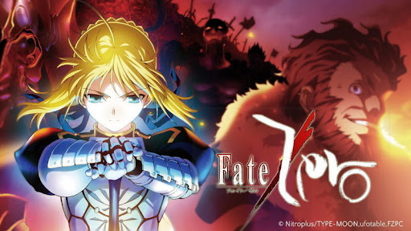
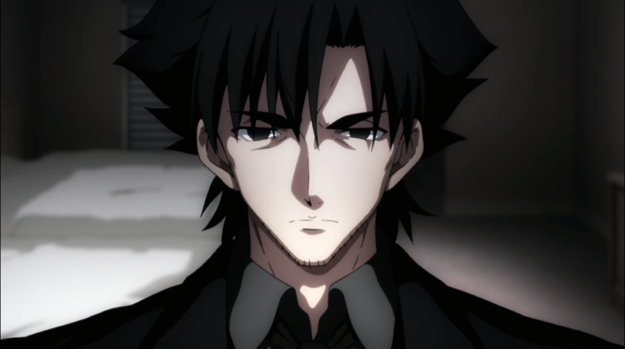

Demon Slayer: Kimetsu no Yaiba se passa no Japão durante a Era Taishō, entre 1912 e 1926. A história acompanha Tanjiro Kamado, um jovem que vende carvão para sustentar sua família. Um dia, sua família é atacada por um demônio, e apenas Tanjiro e sua irmã Nezuko sobrevivem. Nezuko, porém, se transforma em um demônio.
Enredo
Ambientada no Japão durante o Período Taishō (1912-1926), a história gira em torno de Tanjirō Kamado, um garoto bondoso e inteligente que vive junto com sua mãe, Kie Kamado, e seus 5 irmãos mais novos, ganhando dinheiro vendendo carvão, assim como seu falecido pai, Tanjuro Kamado. Certo dia, ao voltar para casa após ter ido a uma cidade vender carvão, Tanjiro descobre que perdeu toda sua família durante um ataque de onis. Uma de suas irmãs, Nezuko, é a única que sobreviveu ao ataque.
Nezuko então passa a ser um oni, mas ela surpreendentemente ainda demonstra sinais de emoções e pensamentos humanos. Tanjirō decide então se tornar um caçador de onis para descobrir mais sobre eles. Com a ajuda de Nezuko, Tanjiro parte em jornadas pelo Japão a fim de impedir que a mesma tragédia que afetou sua família aconteça com outras pessoas, enquanto ele busca uma maneira de tornar Nezuko humana novamente.
A história é cheia de ação, drama e momentos emocionantes, e explora temas como a força da família, a superação de desafios e a busca por justiça.
2° Fate/Zero

Fate/Zero é uma história que se passa dez anos antes dos eventos de Fate/stay night e conta a história da Quarta Guerra do Santo Graal, um torneio mágico secreto que acontece na cidade de Fuyuki. A história gira em torno de Kiritsugu Emiya, um mago que é contratado pela família dos Einzberns para vencer a guerra.
Enredo
A história acompanha a jornada de Kiritsugu e sua busca pelo Santo Graal, enquanto ele enfrenta outros magos e seus servos, conhecidos como Servos, que são espíritos heróicos invocados por meio de um ritual mágico.

A história é cheia de ação, drama e momentos emocionantes, e explora temas como a busca pelo poder, a natureza da justiça e o significado da vida.
1° Fate/stay night: Heaven's Feel
A narrativa se passa na cidade japonesa fictícia de Fuyuki, em 2004, onde um ritual chamado Guerra do Santo Graal, que acontece a cada sessenta anos, está prestes a começar. Nesse conflito, sete magos lutam entre si para adquirir o artefato lendário - o Santo Graal, que supostamente é capaz de realizar qualquer desejo. Para que possam participar da guerra, cada mago deve primeiro ser escolhido pelo Santo Graal para se tornar um Mestre, para que então possam invocar seus respectivos Servos. Esses Servos são Espíritos Heroicos - figuras históricas ou fictícias que se tornaram conhecidas como heróis devido aos seus feitos durante suas vidas. Os Servos são divididos em sete classes de acordo com as suas habilidades e características: Saber, Archer, Lancer, Rider, Caster, Assassin e Berserker.
Enredo
O protagonista da história é o adolescente de 17 anos, Shirou Emiya. Shirou foi o único sobrevivente de um enorme incêndio que cobriu grande parte de Fuyuki, 10 anos atrás; ele foi salvo e posteriormente adotado por um homem chamado Kiritsugu Emiya, que se diz ser um mago. Desde então, Shirou continuamente pratica magia todos os dias de sua vida. Apesar disso, a falta de talento de Shirou, junto com a morte de Kiritsugu antes que ele pudesse passar qualquer ensinamento além do básico, impedem-no de fazer qualquer progresso significante. Assim, Shirou só é capaz de realizar duas magias bem especificas, geralmente vistas como inúteis: análise estrutural e reforçamento de objetos.
Certa noite, após permanecer mais tempo na escola para realizar tarefas, Shirou acaba testemunhando uma luta entre Archer e Lancer. Como a guerra deve ser mantida em segredo do mundo exterior, Lancer persegue e assassina Shirou para silenciá-lo. No entanto, a mestra de Archer, Rin Tohsaka, possuí éticas diferentes como maga, e opta por salvar Shirou, trazendo-o de volta a vida. Shirou acorda horas depois sozinho e sem saber o que fazer, e decide voltar para casa. Quando Lancer descobre Shirou ainda vive, ele o rastreia até sua casa para matá-lo novamente. Num momento de desespero e determinação, Shirou é escolhido pelo Santo Graal para ser um Mestre, e acidentalmente invoca sua Serva, Saber.
A visual novel se divide em três rotas, determinadas por certas escolhas que o jogador pode fazer. A rota Fate foca na relação de Shirou com Saber. A rota Unlimited Blade Works foca num romance de Shirou com Rin e rivalidade com Archer. A rota Heaven's Feel foca num romance entre Shirou e Sakura, além de introduzir uma mudança inesperada na Guerra. Após concluir todas essas rotas, a rota final é liberada.